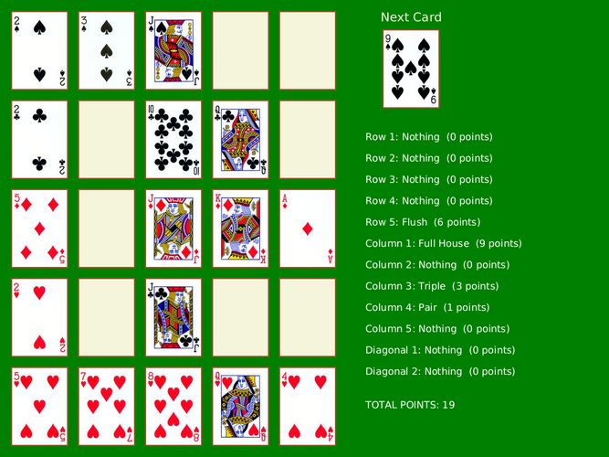

CS 124, Fall 2021
Lab 11: Poker Solitaire
For this lab, you will work on a GUI program to implement a simple solitaire card game. You will work with arrays of objects, including a two-dimensional array, and you will make a subclass of an existing class.
You should create an Eclipse project named lab11 or something similar. You need to add copies of the file and folder from /classes/cs124_Eck/lab11-files. There are a lot of files in the folder named "cards", so don't try to download them individually. Open the folder /classes/cs124_Eck/lab11-files in a file browser window, and copy-and-paste the contents of that directory into the src folder. (Alternatively, you can download this zip archive of the folder and unzip it to get at the files.) Make sure that the "cards" directory is in the src folder, not just in the project; if not, you can drag it into src. The .java files should be in the default package in the src folder.
This lab is due next Tuesday.
The Game
The game that you will implement is a kind of poker solitaire. It is played on a five-by-five grid, where each spot in the grid can hold a playing card. The user sees one card at a time and decides where to place that card in the grid. The user cannot move a card after it has been placed in the grid. The game ends when 25 cards have been placed and the grid is full. The goal of the game is to try to get good poker hands in each row, in each column, and in each of the two diagonals. (You don't need to know poker to implement the game.) Scoring can be added to the game by assigning a certain number of points to each type of poker hand. However, scoring is optional, for extra credit, in this lab. (See the Extra Credit section at the end of this web page for more information about scoring.) Here is a picture of the board in the middle of a game, with the optional scoring:

About the Image Class and Card Images
The playing card images that you will use in the game are in .jpg files in the cards folder that you should have already added to your project. Those files are being used as "resource files" in the program. A resource file is a file that is part of the program but is not a .java file.
In JavaFX, an image is represented by an object of type javafx.scene.image.Image. The Image class has a constructor that takes a String as a parameter. The string can be a path to a resource file. For a resource file that is directly in the src folder of a project, the path would simply be the name of the file. For a resource file in a subfolder of src, the path would include the folder name. For example, to construct an Image object from the file named "C2.jpg" in the folder named "cards", you can use:
Image img = new Image("cards/C2.jpg");
If you have an Image object, you can draw the image on a Canvas using a GraphicsContext, g, with the g.drawImage() method:
g.drawImage( img, x, y );
The parameters x and y are of type double. The upper left corner of the image is placed at the point with coordinates (x,y) in the canvas.
The GraphicalCard Class
The file PokerCard.java defines the PokerCard class to represent a standard playing card. This is a little different from the Card class that we looked at in class, since it uses 14 for the value of an ace, rather than 1. That change was made to make it easier to implement some of the rules of poker.
You should define a new class GraphicalCard as a subclass of PokerCard to represent a playing card along with its associated image. (It would certainly be possible to write the solitaire program without defining this class, but I am requiring you to do so as an exercise.) The constructor for a GraphicalCard should still take the value and suit of the card as parameters. The constructor will need to use super to call the constructor from the superclass. (See Section 5.6.3; we went over this in class yesterday.) But is should also create the Image object for the card.
Getting the correct name for the image file is a problem, but you certainly don't need 52 separate cases! The card image files have names like "cards/H5.jpg" for the 5 of Hearts, "cards/SK.jpg" for the King of Spaces, "cards/D10.jpg" for the 10 of Diamonds. You might notice that the first character in "H5", "SK", and "D10" is also the first character of the string returned by the getSuitAsString() instance method in the PokerCard class. And for the second character in the case of a Jack, Queen, King, or Ace, you might look at getValueAsString().
The GraphicalCard class also needs an instance method for drawing the image. As the parameters for that instance method, you need a GraphicsContext and two doubles for the upper left corner of the image.
Test your class before proceeding. Add some temporary code to the draw() method in PokerSolitaire.java to create a GraphicalCard and draw it.
(Note: The PokerCard class also implements Jokers, but your GraphicalCard class does not have to support Jokers. You can ignore them. However, if you want to support them, there is joker.jpg file in the cards folder that you can use for the image.)
Poker Solitaire
The rest of the work for the lab will be in the file PokerSolitaire.java. That program already draws a 5-by-5 grid of empty spaces and a space for drawing the next available card. You will finish the implementation.
Some requirements: Make sure that the user can't place a card in a grid position that is already occupied. After the grid is full, the game ends, and the user should be able to start a new game (such as by clicking anywhere — or maybe just by clicking in the "next card" rectangle which would make it harder to start the new game by accident). And you should think about what to draw in the "Next Card" spot when the game is over. You might draw a message saying the game is over. Another idea is to draw a face-down card there; the image for the back of a card is in the file "cards/back.jpg".
You will need a deck of 52 GraphicalCards. My version of the program simply uses an instance variable of type GraphicalCard[], along with an int variable to keep track of which card in the array is the next card to be played in the game. I had to create all the cards for the array, and shuffle the deck at the start of each game. We looked at a Deck class that does all that. You can use code that is very similar to the code from Deck.java, but watch out for the fact that an Ace in the GraphicalCard class has value 14, not 1. (Alternatively, you could make a GraphicalDeck class that is almost a copy of Deck.java, using GraphicalCards instead of Cards. Unfortunately, you can't simply use the unmodified Deck class.)
You need to add a mouse-pressed event handler to the program to react when the user clicks the canvas. See the section on "Mouse Events" from the previous lab if you need a reminder about how to do that. Much of the work of the game is done in the mouse event handler.
When the user clicks the canvas, and a game is in progress, you need to determine where the user is trying to place the next card. You get the (x,y)-coordinates of the point where the user clicked from the mouse event. You need to check which of the empty rectangles, if any, contains the point (x,y). One way to do that uses nested for loops similar to the ones that are used in the draw() method to draw the empty rectangles. (It is also possible to simply calculate the row and column number from x and y, if you are mathematically inclined.) You should ignore any mouse click that is not in one of the empty rectangles. In particular, if the user clicks a rectangle that already contains a card, you should ignore it.
There are two approaches to drawing the board. One is to completely redraw the board any time anything needs to be changed. In this approach, the draw method must redraw the board completely, based on the current state of all the instance variables. Whenever a change is made to an instance variable that affects the contents of the board, draw() must be called to redraw the board. This might seem inefficient, but it is often the best approach since it is easy to make sure that the appearance of the board exactly reflects the state of the program.
The second approach is to try to redraw just part of the board when something changes. For example, when the user places a card, just draw that card. But then, you also have to remember to draw the new next card. And if you are doing scoring, the score might need to be updated. You can make it work in this program (especially if you are not doing scoring), but in general it can be hard to get right.
Extra Credit: Scoring
Scoring is not a requirement of this lab, but you can get five points of extra credit for implementing it. The coding is a little tedious, but a lot of the work will be done by an object of type PokerRank, defined by the file PokerRank.java. A PokerRank object, ranker, can compute a rank for a hand of from zero to five PokerCards. The rank is an integer from 0 to 9 and is returned by ranker.getHandType(). A name for the rank, such as "Two Pairs" or "Flush", is returned by ranker.getHandTypeAsString(). The number of points that you should award for each rank is shown in the table below. Consider storing the point values in an array.
You really only need one ranker object of type PokerRank. To use it to get the rank of a hand of cards, first call ranker.clear() to remove any cards that have previously been added. Then call ranker.add(card) for each card in the hand. Note that card cannot be null. Then you can use ranker.getHandType() and ranker.getHandTypeAsString().
You need to apply the ranker to each row, to each column, and to the two diagonals. The cards in the grid are stored in a two-dimensional array. You just need to go through the relevant part of the array and add the appropriate cards to ranker, being careful not to add null values. You want to display the type of each hand and the number of points for that hand. You also want to display the total points for all 12 hands, which is the user's overall score in the game.
| Rank (getHandType()) | Name (getHandTypeAsString()) | Points |
|---|---|---|
| 0 | Nothing | 0 |
| 1 | Pair | 1 |
| 2 | Two Pairs | 2 |
| 3 | Triple | 3 |
| 4 | Straight | 4 |
| 5 | Flush | 6 |
| 6 | Full House | 9 |
| 7 | Four of a Kind | 25 |
| 8 | Straight Flush | 50 |
| 9 | Royal Flush | 250 |